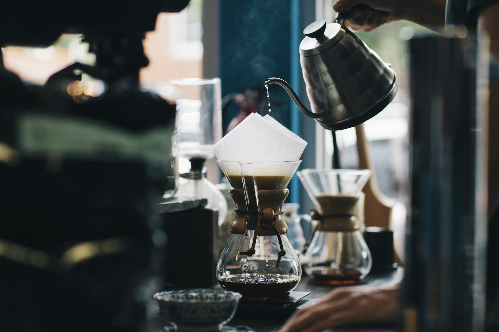
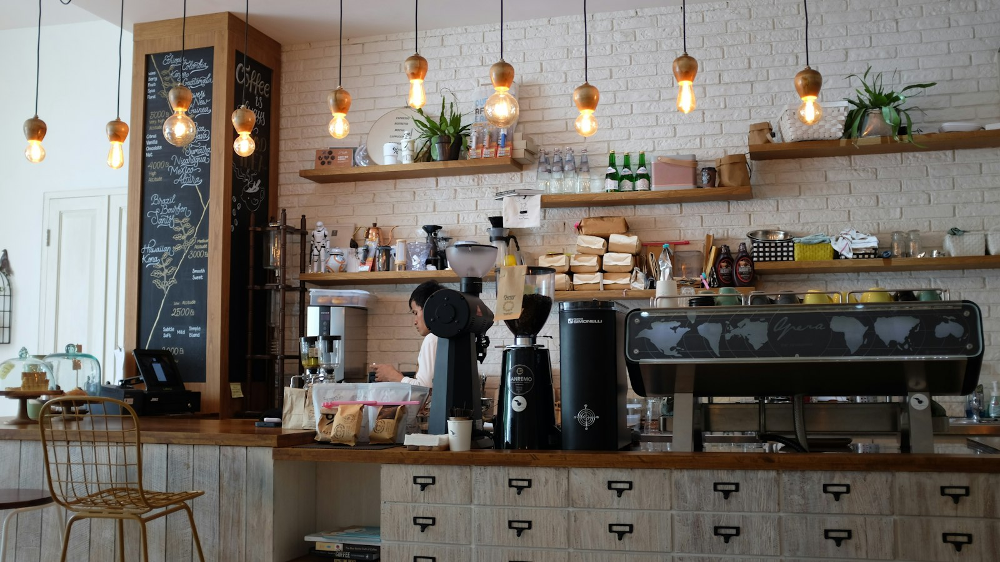

Est. with love
Scarborough
Scarborough
Our story
A family-run hideaway by the station.
Seven Coffee House began with a simple idea — a place that feels like home, right in the heart of Scarborough. Family-owned and run, we've poured our hearts into every corner: reclaimed wood, soft lighting and that unmistakable smell of freshly ground coffee.
Wander through to our light-filled conservatory at the back — the sunniest seat in town — or settle into the rustic-chic front room and watch the world go by on York Place, just a stone's throw from the train station.
- Handcrafted coffee — carefully sourced beans, poured with care
- Homemade brunch — cooked fresh every morning
- Dogs very welcome — water bowls and treats always out